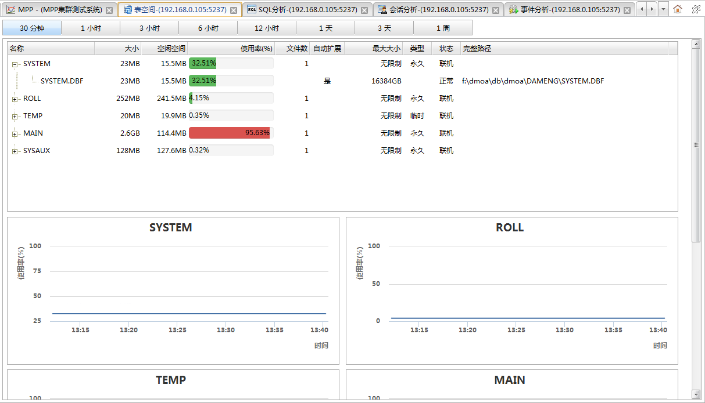

从数据库监控面板中的数据库列表的操作下拉菜单中点击表空间分析可以打开表空间分析面板，该页面用于查看最近一段时间内数据库实例各个表空间的使用情况。如下图所示:

时间按钮
点击按钮可以切换查看最近各个不同时间段内的表空间的使用情况。
表空间信息列表
列表中为当前收集到的最新的表空间监控信息。
| 字段 | 说明 |
|---|---|
| 名称 | 表空间名称。 |
| 大小 | 表空间大小。 |
| 空闲空间 | 表空间空闲空间大小。 |
| 使用率 | 表空间使用率。 |
| 文件数 | 表空间文件个数。 |
| 自动扩展 | 是否可以自动扩容。 |
| 最大大小 | 表空间限制最大大小。 |
| 类型 | 表空间类型。（永久、临时） |
| 状态 | 表空间状态。（联机、脱机） |
| 完整路径 | 表空间文件完整路径。 |
表空间使用率图表
页面下方的一组图表反映了最近一段时间内各个表空间使用率。每个表空间一个曲线图，横坐标是时间，纵坐标是磁盘使用率。